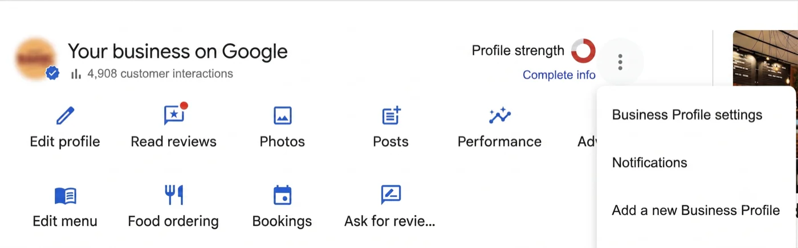
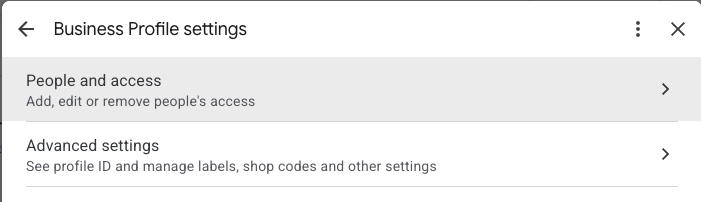

Így adsz hozzá minket a Google-profilodhoz
Két perc, jelszó nélkül, telepíteni sem kell semmit. Kezelői hozzáférést adsz nekünk, amit bármikor vissza is vehetsz.
Először: igényelted már a profilodat?
Rengeteg vállalkozás úgy szerepel a Google Térképen, hogy a profilját soha senki nem igényelte. A Google létrehozta, de nem irányítja senki — vagyis válaszolni sem tud rá senki, mi sem. Ezt nézd meg legelőször.
- Keresd meg a helyet a Google Térképen
A cég nevével és a várossal, ahogy egy vendég is keresné.
- Keresd a „Vállalkozás igénylése" linket
Ha látod, a profil még szabad. Kattints rá, majd a „Kezelés most" gombra, és kövesd a Google ellenőrzési lépéseit. Az ellenőrzés eltarthat pár napig, úgyhogy érdemes most elindítani.
- Ha nem látod, minden rendben
Ha nincs igénylési link, a profil már valakié. Ha ez a valaki te vagy, mehetsz tovább.
Valaki más igényelte? Előfordul: egy régi kolléga, egy ügynökség, egy korábbi tulajdonos. A Google-nek pont erre van tulajdonjog-igénylési folyamata — lassú, de működik. Szólj, és végigvezetünk rajta.
Utána: adj hozzá minket kezelőként
Ha teheted, számítógépről csináld — ott könnyebb megtalálni a menüpontokat, mint a mobilappban.
- Nyisd meg a cégprofilodat
Keress rá a cég nevére úgy, hogy be vagy jelentkezve a profilt birtokló Google-fiókba, vagy nyisd meg a profilt a Térképen.
- Menj a Továbbiak → Cégprofil beállításai → Felhasználók és hozzáférés menüpontra
Ezek a Google saját menüfeliratai.

A hárompontos menü (⋮) a profilod jobb felső sarkában → Cégprofil beállításai 
Aztán a Felhasználók és hozzáférés A képeken angol nyelvű Google-felület látszik — ha a tiéd magyar, ugyanezeket a pontokat magyar felirattal találod.
- Kattints a bal felső „Hozzáadás" gombra
Megnyílik egy panel, ami e-mail-címet kér.
- Írd be a Responsa e-mail-címét
A pontos címet regisztrációkor küldjük — benne van az üdvözlő e-mailben, úgyhogy onnan másold ki, ne gépeld.
- A „Hozzáférés" alatt válaszd a „Kezelő" szerepet
Kezelő, nem Tulajdonos. Nekünk ennyi elég, és így a profil végig a te kezedben marad.
- Kattints a „Meghívás" gombra
Mi elfogadjuk, és ezzel a beállítás kész. Pár napon belül jönnek az első válaszjavaslatok.
Mit tesz lehetővé a kezelői hozzáférés
Legyünk őszinték: a Google Kezelő szerepe többet enged, mint pusztán a válaszolás. Így néz ki a valóság.
| Megteheti… | Kezelő (mi) | Tulajdonos (te) |
|---|---|---|
| Válaszol az értékelésekre | Igen | Igen |
| Szerkeszti az adatokat, nyitvatartást, képeket | Igen | Igen |
| Hozzáad vagy eltávolít másokat | Nem | Igen |
| Törli a profilt | Nem | Igen |
| Visszavonja a hozzáférésünket | Nem | Igen |
Vagyis egy kezelő elvileg a cégadatokat is szerkeszthetné. Mi kizárólag az értékelésekre válaszolunk. A nyitvatartásodhoz, a képeidhez és a leírásodhoz nem nyúlunk, téged pedig nem tudunk eltávolítani és semmit nem tudunk törölni. A hozzáférésünket ugyanabban a menüben vonhatod vissza, ahol megadtad.
A hozzáférésünk visszavonása
Továbbiak → Cégprofil beállításai → Felhasználók és hozzáférés, kijelölöd a mi sorunkat, majd Eltávolítás. Azonnal érvénybe lép, és előtte nem kell szólnod nekünk.
Gyakori kérdések
Kell nektek a Google-jelszavam?
Nem, és soha senkinek ne add oda. A meghívás a Google saját jogosultsági rendszerén keresztül működik — a mi fiókunknak adsz hozzáférést, nem a tiédet osztod meg.
Kimehet úgy válasz, hogy nem látom?
Csak ha te kéred. Alapból minden választ megírunk, elküldünk neked, és csak akkor kerül ki, ha jóváhagytad. Ha szeretnéd, hogy egy részük magától kimenjen, szólj, melyek azok — beállítjuk, és bármikor visszaállíthatod.
Mi van, ha nem tetszik egy válasz?
Elutasítod, vagy megírod, mit változtassunk. A javításaid visszakerülnek abba, ahogy neked írunk, így ugyanaz a hiba nem jön elő kétszer.
Bármikor abbahagyhatom?
Igen, felmondási idő nincs. Szólj, és a már kifizetett hónap végéig még dolgozunk — érdemes addig meghagyni a hozzáférésünket, mert ez tesz minket képessé arra, hogy válaszoljunk. Ha inkább azonnal visszavonod, azt is megteheted bármikor; onnantól nem tudunk válaszolni, a már kiszámlázott hónapot viszont nem térítjük vissza. A kiment válaszok maradnak, mert azok a tieid.
Elakadtál valahol? Írj nekünk, és egy hívás alatt együtt megcsináljuk. Ez a lépés akad el a leggyakrabban, és öt perc alatt megoldható. Írj nekünk